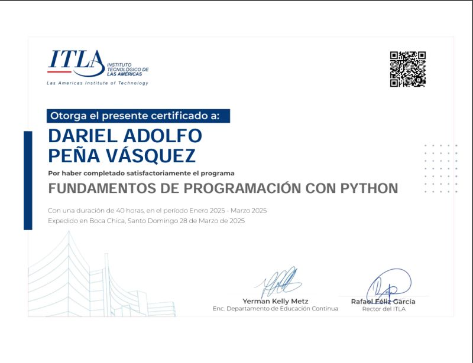
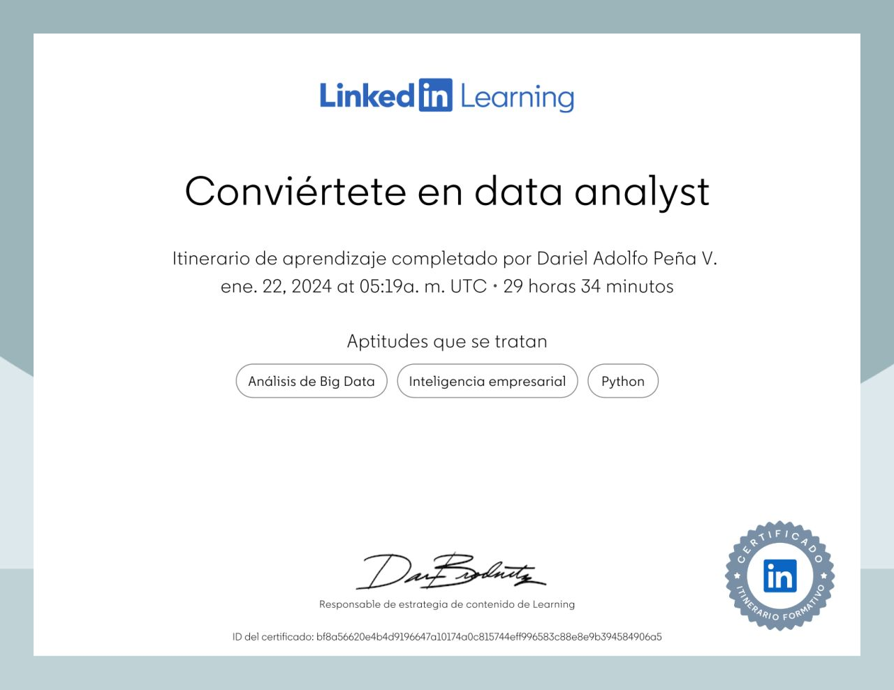
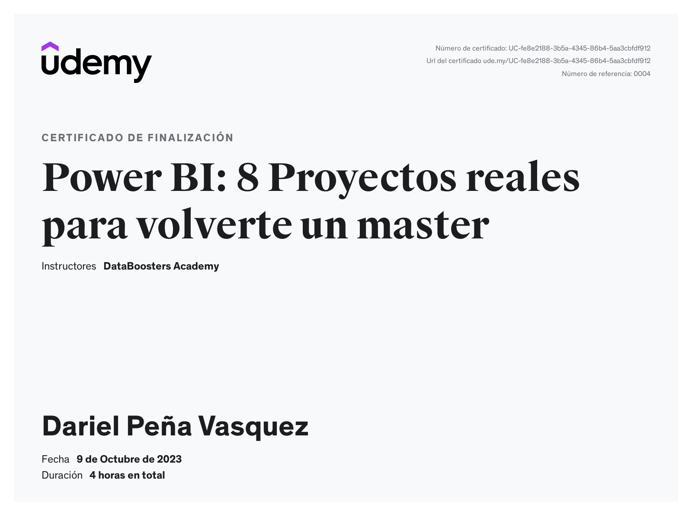
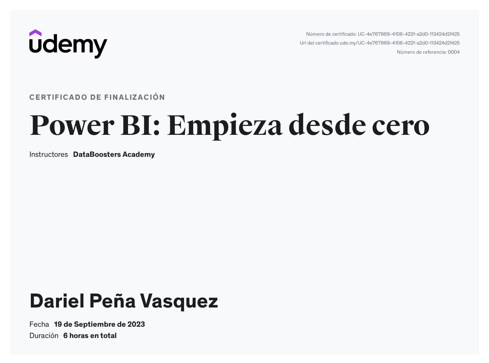
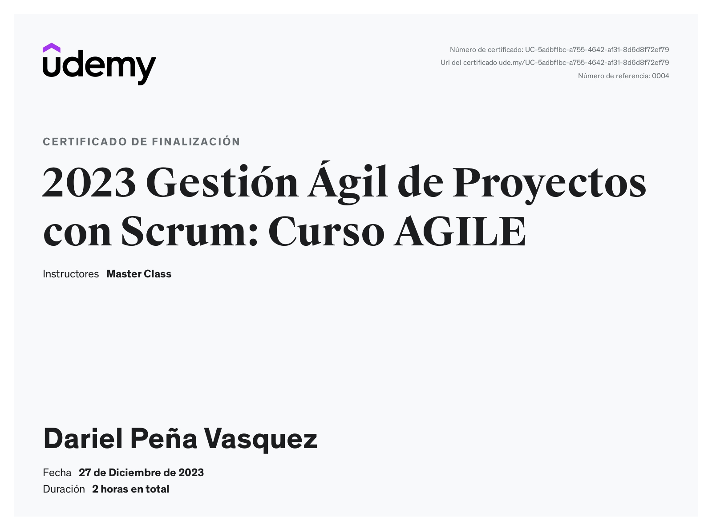

Educación continua
Continuous Education
🎓 Cursos y Certificaciones 🎓 Courses & Certifications
Haz clic en las categorías y luego en la imagen para ver el certificado. Click on the categories and then on the image to view the certificate.
Instituto Tecnológico de las Américas (ITLA) — Dic. 2024 | 40
horas
ETL: Extract, Transform and Load desde diferentes fuentes.
Power Query para transformar y preparar datos de forma eficiente.
ETL: Extract, Transform and Load from different sources.
Power Query to transform and prepare data efficiently.
Instituto Tecnológico de las Américas (ITLA) — Ago. 2024 | 40
horas
Manejo de datos con Python, Dataset, funciones básicas,
variables, bucles y lógica.
Data management with Python, Datasets, basic functions,
variables, loops, and logic.
Instituto Tecnológico de las Américas (ITLA) — Mar. 2025 | 40
horas
Manejo de datos con Python, Dataset, funciones básicas,
variables, bucles y lógica.
Data management with Python, Datasets, basic functions,
variables, loops, and logic.

LinkedIn Learning — Ene. 2024 | 29 horas
SQL, Visualización, inteligencia de negocio, Power BI,
Excel, funciones y DAX.
SQL, Visualization, Business Intelligence, Power BI,
Excel, functions, and DAX.

Udemy — Dic. 2025 | 5 horas
Python, dataset, pandas, numpy, modelos de predicción,
visualización y análisis.
Python, dataset, pandas, numpy, predictive models,
visualization, and analysis.

Udemy — May. 2025 | 11 horas
Power BI, Excel, DAX, IA generativa, diseño visual,
ChatGPT, funciones y análisis.
Power BI, Excel, DAX, Generative AI, visual design,
ChatGPT, functions, and analysis.

LinkedIn Learning — Dic. 2024 | 2 horas
Estadísticas, algoritmos, funciones matemáticas, muestra,
media, probabilidad e inferencia estadística.
Statistics, algorithms, mathematical functions, sample,
mean, probability, and statistical inference.

Platzi — Nov. 2024 | 2 horas
Estadísticas, algoritmos, funciones matemáticas, muestra,
media, probabilidad e inferencia estadística.
Statistics, algorithms, mathematical functions, sample,
mean, probability, and statistical inference.
Platzi — Jun. 2024 | 20 horas
Estadísticas, gráficos, medidas DAX, Power Query,
dashboard e inteligencia de negocio.
Statistics, charts, DAX measures, Power Query, dashboards,
and Business Intelligence.
Platzi — Jun. 2024 | 12 horas
Gráficos, medidas DAX, Power Query, dashboard e
inteligencia de negocio.
Charts, DAX measures, Power Query, dashboards, and
Business Intelligence.
Udemy — Oct. 2023 | 4 horas
Estadísticas, gráficos, medidas DAX, Power Query,
dashboard e inteligencia de negocio.
Statistics, charts, DAX measures, Power Query, dashboards,
and Business Intelligence.

Udemy — Sep. 2023 | 6 horas
Gráficos, interfaz, Power Query, conexiones, fuentes de
datos, dashboard e inteligencia de negocio.
Charts, interface, Power Query, connections, data sources,
dashboards, and Business Intelligence.

Udemy — Ene. 2024 | 35 horas
Mentalidad ágil, presentación al equipo, colaboración y
responsabilidades.
Agile mindset, team introduction, collaboration, and
responsibilities.
LinkedIn Learning — Dic. 2023 | 2 horas
Mentalidad ágil, presentación al equipo, colaboración y
responsabilidades.
Agile mindset, team introduction, collaboration, and
responsibilities.
LinkedIn Learning — Dic. 2023 | 2 horas
Mentalidad ágil, productividad del equipo, colaboración y
liderazgo.
Agile mindset, team productivity, collaboration, and
leadership.
LinkedIn Learning — Dic. 2023 | 12 horas
Gestionar un proyecto a través del ciclo de vida ágil.
Transición de gestión en cascada a gestión de proyectos ágil.
Manage a project through the agile lifecycle. Transition
from waterfall management to agile project management.
Udemy — Dic. 2023 | 2 horas
Roles en Scrum, colaboración, gestión de proyectos e
implementaciones.
Roles in Scrum, collaboration, project management, and
implementations.

LinkedIn Learning — Dic. 2023 | 2 horas
Planificación, transiciones, fundamentos de gestión ética,
ágil y de integración de proyectos.
Planning, transitions, fundamentals of ethical, agile
management, and project integration.
LinkedIn Learning — Nov. 2023 | 2 horas
Desarrollo individual, técnicas de trabajo en equipo,
avances constantes, ser una guía y ayuda para el equipo.
Individual development, teamwork techniques, constant
progress, being a guide and support for the team.
Udemy — Dic. 2024 | 7.5 horas
Consultas básicas, IA generativa para optimizar, gestión
de BDD, DML.
Basic queries, generative AI to optimize, DB management,
DML.

Udemy — Jun. 2024 | 21 horas
Consultas avanzadas, gestión de BDD, DDL, DML y
optimización de consultas.
Advanced queries, DB management, DDL, DML, and query
optimization.
Tablas dinámicas, funciones, fórmulas básicas y avanzadas para análisis de datos en Excel. Pivot tables, functions, basic and advanced formulas for data analysis in Excel.